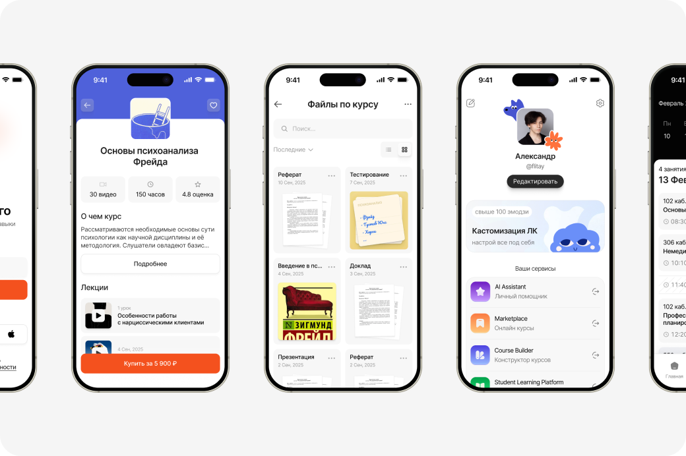

Education EcoSystem
Спроектировал с нуля пять сервисов образовательной экосистемы вуза и объединил их со старой LMS в один личный кабинет. Сейчас курсы собирают сами авторы, без разработчиков, а запуск курса сократился с недель до нескольких дней.
В команде: владелец продукта, тимлид, PM, аналитик, 3 системных администратора, 3 фронтенд- и 4 бэкенд-разработчика, QA.
У вуза была устаревшая LMS InStudy и отдельный сайт для дополнительного образования на другом домене. Курсы продавались через публичный сайт «Лекторий МИП», но не было ни места, где их проходить, ни инструмента, чтобы их создавать. Нужно было превратить разрозненные системы в экосистему, которая растёт без постоянного участия разработчиков.
Провёл 100+ глубинных интервью и защитил концепт системы перед ректором. Затем спроектировал маркетплейс курсов с плеером, блочный конструктор курсов, AI-ассистента на уточняющих вопросах вместо промптов, дашборд студента и единый вход для всех сервисов. Всё это собрано на Ant Design.
- Авторы собирают и публикуют курсы сами, силами одного сотрудника.
- Запуск курса сократился с ~месяца до нескольких дней.
- Студент заходит во все сервисы через один аккаунт.
- После того как я встроил дизайн-ревью в процесс, UI-багов на задачу стало 0–1 вместо 2 и больше.
Часть данных проекта скрыта по NDA.
С чего всё началось: исследование и защита концепта
Прежде чем рисовать интерфейсы, нужно было понять, для кого мы строим систему и что в ней действительно болит. Два месяца ушли на исследование:
- глубинные интервью 1-на-1 со студентами, ответы сведены в общую базу;
- CJM студента в десктопе и мобайле «как есть»;
- MindMap системы до и после анализа: что есть, что лишнее, чего не хватает.
По итогам я собрал продуктовую презентацию: результаты исследования, портрет пользователя, ключевые проблемы студентов, CJM, целевая структура системы, роадмап, объём рынка онлайн-образования, команда, референсы.
Я защитил концепт перед ректором университета и получил добро на разработку. Эта презентация стала основой роадмапа на следующие этапы.
Ключевые решения
1. Ant Design вместо собственной дизайн-системы
На прошлом проекте («Навигатор Карьеры») я на практике увидел, сколько стоит своя UI-библиотека: её нужно спроектировать, сверстать, задокументировать и поддерживать. Здесь впереди было пять сервисов и всего три фронтенд-разработчика, поэтому я выбрал зрелую библиотеку.
Компромисс: меньше визуальной уникальности. Взамен мы получили скорость разработки, предсказуемые компоненты и дешёвую поддержку.
Маркетплейс курсов — один из сервисов, собранных на Ant Design
2. Конструктор курсов: автор работает без разработчика
Раньше запуск курса мог занимать до месяца и требовал технических действий. Я начал с интервью с авторами и изучил инструменты, к которым они уже привыкли. Затем спроектировал:
- вложенность «курс → модуль → урок» с разными типами доступа;
- блочный редактор урока: текст, видео, материалы, задания;
- режим предпросмотра «глазами студента», чтобы автор проверял курс до публикации.
Результат: курс собирает и публикует один сотрудник за несколько дней. Каталог маркетплейса наполняется без участия разработки.
3. AI-ассистент: вопросы вместо промптов
Интервью показали неожиданное: людям трудно не столько пользоваться ИИ, сколько формулировать запрос. Они не задают контекст и требования к результату и получают общие ответы.
Решение: пользователь отвечает на короткую цепочку уточняющих вопросов, а система сама собирает структурированный запрос к модели. Для администраторов я спроектировал конструктор сценариев, чтобы новые сценарии добавлялись без разработчиков.
От чего отказались сознательно: от «умного» универсального ассистента. На него не хватало бюджета и компетенций, а сценарный подход закрывает повторяющиеся задачи дешевле и надёжнее. Сейчас ассистент работает в пилоте на внутренних сотрудниках.
4. Дашборд студента: что мы убрали
Изначально хотели выводить на главную аналитику успеваемости. Интервью показали, что студенту она не нужна: ему важно понять, что делать сегодня. Поэтому главная стала рабочим пространством. Я сделал систему переиспользуемых виджетов с универсальными размерами под сетку: расписание (вебинары из курсов подтягиваются автоматически), прогресс, ближайшие действия, быстрый переход в сервисы.
Систему ачивок и достижений тоже обсуждали, но оставили в бэклоге: она не решала ни одной из найденных проблем.
5. Единый вход
Студенту больше не нужно отдельно регистрироваться в LMS и на сайте ДПО. Я спроектировал авторизацию, регистрацию, восстановление доступа, объединение существующих аккаунтов, 2FA и переходы между сервисами. Один аккаунт открывает всю экосистему.
Процесс: дизайн-ревью стало обязательным этапом
На прошлом проекте я недооценивал дизайн-ревью: его делали «между делом», и расхождения между макетом и продом копились. Здесь я исправил это на уровне процесса.
Было: два файла в Figma, «Десктоп» и «Мобайл». Разработчикам так удобно, потому что у сайта есть мобильная версия на отдельном домене. Но в таком устройстве не видно, на каком этапе находится раздел.
Стало: отдельный файл на каждый раздел, внутри четыре страницы по жизненному циклу макета:
На странице Design Review я кладу рядом скриншот из прода и исходный макет, отмечаю расхождения и поясняю, как должен работать элемент. Разработчик, который верстал задачу, получает конкретный список правок прямо в контексте макета. Prod всегда показывает то, что реально работает у пользователей.
Эффект: было 2 и больше UI-бага на задачу, стало 0–1. Ревью ни разу не задержало релиз: dev-версию я смотрю сразу после вёрстки.
Что я вынес из проекта
Решения, подкреплённые интервью, проходили защиту у руководства легко. Там, где данных не было, побеждало мнение. Теперь я закладываю исследование и проверку в план с самого начала, чтобы спорить фактами, а не вкусом.